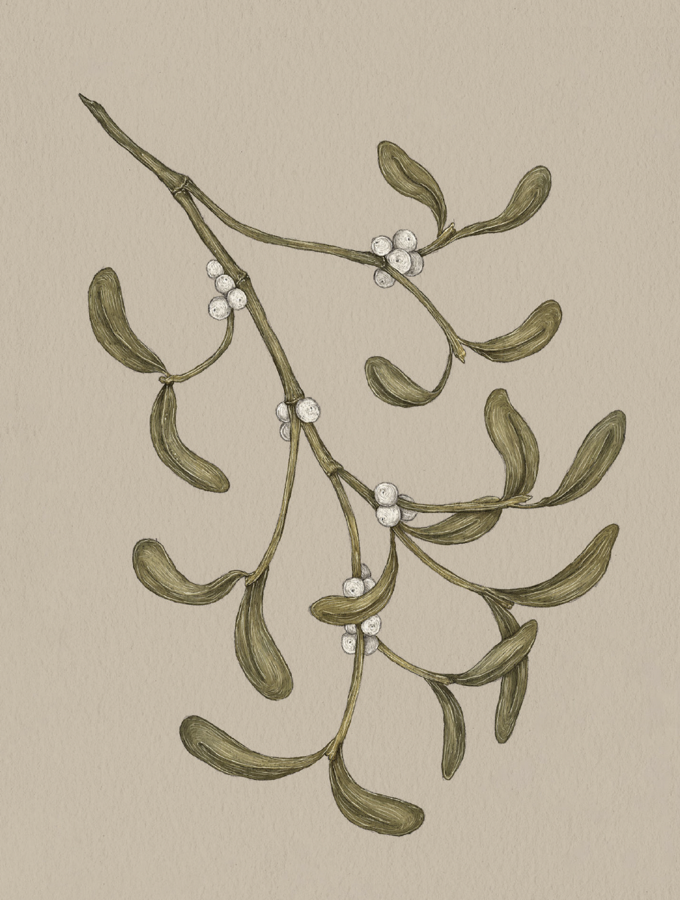

The Language of Flowers
Mistletoe

Mistletoe
Viscum
Meaning
Surmounting all difficulties
Origin
In Norse mythology, the beloved god Balder was haunted by dreams of his impending death, so his
devoted mother, Frigga, made everything in nature promise not to hurt him. Sadly, she overlooked the
mistletoe plant. Loki, god of mischief, created an arrow from the plant and tricked Balder's brother
into killing him with it. In her grief, Frigga begged the other gods to bring Balder back, which they
did, proving he could surmount all difficulties, even death itself. The now common use of mistletoe
as decoration during Christmastime is a holdover from Druidic winter solstice celebrations. The bright
winter berry, cut from the oak tree, was seen as a symbol of hope during the darkest, most difficult
time of year.
Pair With
- Amaryllis for the confidence to overcome a challenge
- Lady Slipper to indicate your faith that the tides will turn in the recipient's favor